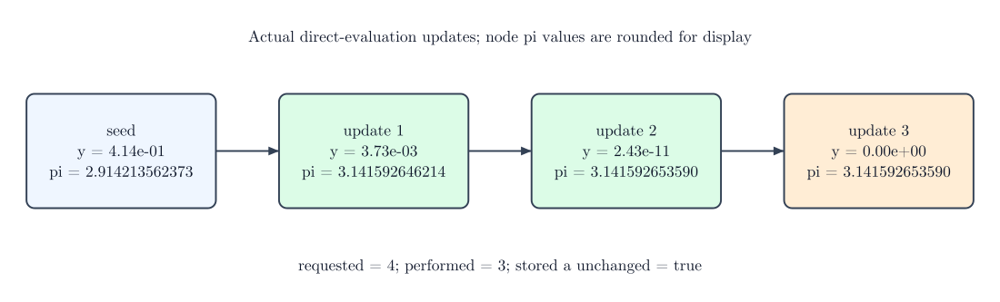
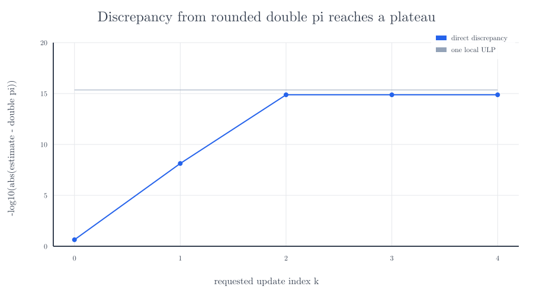
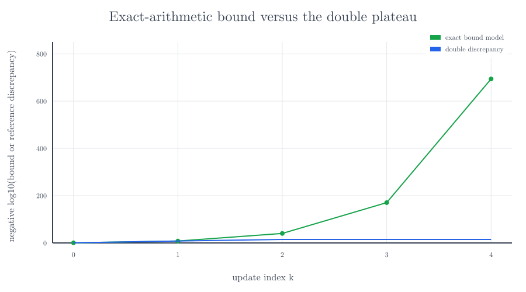

Borwein Pi: Quartic Convergence and the Double-Precision Plateau
Abstract
Borwein's quartic iteration approaches pi rapidly in exact arithmetic, but a double stores only a finite number of significant bits. We retain the original four-update sequence and inspect the native loop's actual states. Two updates produce a close pi estimate; a third leaves the stored inverse-pi value unchanged. A theoretical logarithmic error bound continues improving far beyond that numerical plateau. An algebraically rationalised update exposes why preserving a tiny auxiliary value alone does not certify the final pi estimate.
A small execution: two improvements and one unchanged update
The seeds are \(y_0=\sqrt{2}-1\) and \(a_0=6-4\sqrt{2}\), with estimate \(p_0=1/a_0\). The diagram follows an actual direct-evaluation trace requested for four updates. The core stops after an update leaves its stored a unchanged. The sequence API still returns five values, including the seed, by copying the plateau value into later requested positions. A copied sequence position is not an additional arithmetic update.
#include <dm/dm.hpp>
int main() {
std::filesystem::create_directories("build");
const auto trace=dm::algorithms::borwein_pi_trace(4);
dm::graphics::Diagram diagram(65,1100);
dm::graphics::DiagramNodeStyle style;style.width=3.3;style.height=2;
diagram.node("seed",{0,0},std::format("seed\ny = {:.2e}\npi = {:.12f}",trace.initial_y,trace.initial_estimate),style);
std::string previous="seed";
for (const auto& step:trace.steps) {
const auto id=std::format("s{}",step.iteration);
style.fill=step.unchanged?dm::RGB{255,237,213}:dm::RGB{220,252,231};
diagram.node(id,{4.4*step.iteration,0},std::format("update {}\ny = {:.2e}\npi = {:.12f}",
step.iteration,step.y,step.estimate),style).edge(previous,id);
previous=id;
}
diagram.text({6.6,2},"Actual direct-evaluation updates; node pi values are rounded for display")
.text({6.6,-2},std::format("requested = {}; performed = {}; stored a unchanged = {}",
trace.requested_iterations,trace.iterations_performed,trace.stagnated))
.save_svg("build/borwein_states.svg");
std::print("Requested updates: {}; actual updates: {}; stagnated: {}.\n\n",
trace.requested_iterations,trace.iterations_performed,trace.stagnated);
std::print("Seed estimate: {:.17g}; final estimate: {:.17g}.\n",trace.initial_estimate,trace.estimate);
}Requested updates: 4; actual updates: 3; stagnated: true.
Seed estimate: 2.9142135623730985; final estimate: 3.1415926535897918.

The recurrence and where fourth order appears
With \(r_k=(1-y_k^4)^{1/4}\), use
The native loop evaluates the fourth root with pow and forms the integer powers by multiplication. Its seed, direct expression and short-run arithmetic order are preserved from the original implementation.
For small \(u\), Taylor expansion gives \((1-u)^{1/4}=1-u/4+O(u^2)\). Substituting \(u=y_k^4\) into the first recurrence gives
Thus the auxiliary y shrinks with fourth order. Establishing the limit p_k=pi also uses the special seed and the coupled a update; the local Taylor expansion alone does not prove that limit. The iteration is given in Borwein and Borwein's Pi and the AGM, Iteration 5.3. Brent's [Algorithm BB4 and Corollary 1](https://arxiv.org/abs/1802.07558) connect its exact-arithmetic estimates to every second Gauss–Legendre lower estimate.
Original four-update sequence: discrepancy from rounded double pi
Use the original request for four updates. The reference is C++'s rounded double pi constant, not an exact real pi oracle. An ULP here means the gap from that constant to its next larger double. All displayed estimates lie in the same [2,4) binade, so their signed gaps in these units are integer ULP steps. Neither a small discrepancy nor equality to that reference certifies all decimal digits or exact equality to pi.
#include <dm/dm.hpp>
int main() {
std::filesystem::create_directories("build");
const auto values=dm::algorithms::borwein_pi_sequence(4);
const auto trace=dm::algorithms::borwein_pi_trace(4);
const double reference=std::numbers::pi;
const double ulp=std::nextafter(reference,std::numeric_limits<double>::infinity())-reference;
std::vector<double> iteration,accuracy;
std::size_t zeros=0;
std::print("| k | estimate | distance to double pi | signed local ULP gap | source of this value |\n"
"| ---: | ---: | ---: | ---: | :--- |\n");
for (std::size_t k=0;k<values.size();++k) {
const double discrepancy=std::abs(values[k]-reference);
const std::string event=k==0?"seed":k>trace.steps.size()?"padded copy":trace.steps[k-1].unchanged?"unchanged update":"update";
std::print("| {} | {:.17g} | {:.3e} | {:.0f} | {} |\n",k,values[k],discrepancy,(values[k]-reference)/ulp,event);
if (discrepancy>0) {iteration.push_back(k);accuracy.push_back(-std::log10(discrepancy));}
else ++zeros;
}
const double ulp_accuracy=-std::log10(ulp);
dm::graphics::RPlot::create().lines(iteration,accuracy,"direct discrepancy",dm::RGB{37,99,235},2)
.points(iteration,accuracy,"",dm::RGB{37,99,235},4)
.lines({0,4},{ulp_accuracy,ulp_accuracy},"one local ULP",dm::RGB{148,163,184},1)
.title("Discrepancy from rounded double pi reaches a plateau")
.x_label("requested update index k").y_label("-log10(abs(estimate - double pi))")
.y_limits(0,20).size(900,500).save_svg("build/borwein_pi.svg");
std::print("\nZero discrepancies omitted from the transform: {}. Local ULP: {:.3e}.\n",zeros,ulp);
}| k | estimate | distance to double pi | signed local ULP gap | source of this value |
|---|---|---|---|---|
| 0 | 2.9142135623730985 | 2.274e-01 | -512012195237674 | seed |
| 1 | 3.1415926462135468 | 7.376e-09 | -16609830 | update |
| 2 | 3.1415926535897918 | 1.332e-15 | -3 | update |
| 3 | 3.1415926535897918 | 1.332e-15 | -3 | unchanged update |
| 4 | 3.1415926535897918 | 1.332e-15 | -3 | padded copy |
Zero discrepancies omitted from the transform: 0. Local ULP: 4.441e-16.

The seed subtraction also loses relative precision: a_0 subtracts two nearby rounded quantities. Later rounding is not repaired merely by requesting more iterations. Once y is tiny, subtracting y^4 from one can round to one; its fourth root is then one, and the direct numerator 1−r becomes zero. The next block separates an exact-arithmetic model from these rounded states.
Exact-arithmetic error bound, evaluated in the log domain
For exact iterates, Brent's equation (29) gives
The native helper approximately evaluates its logarithm:
It avoids exponentiating an extremely small bound. Taking the negative logarithm exposes a leading term proportional to 4^k; an additional exact iteration therefore approximately quadruples the available decimal accuracy. This bound is for exact arithmetic. It does not bound errors introduced by rounded seeds, roots and updates, and its double evaluation is not interval arithmetic or a certified numerical enclosure. [Brent, equation (29) and Corollary 2](https://arxiv.org/abs/1802.07558).
#include <dm/dm.hpp>
int main() {
std::filesystem::create_directories("build");
const auto values=dm::algorithms::borwein_pi_sequence(4);
std::vector<double> index,model,observed_index,observed;
std::print("| exact-arithmetic index k | approximate log10(B_k) | negative log10(B_k) |\n"
"| ---: | ---: | ---: |\n");
for (int k=0;k<=4;++k) {
const double logarithm=dm::algorithms::borwein_pi_log10_error_bound(k);
if (!std::isfinite(logarithm)) return 1;
index.push_back(k);model.push_back(-logarithm);
const auto discrepancy=std::abs(values[k]-std::numbers::pi);
if (discrepancy>0) {observed_index.push_back(k);observed.push_back(-std::log10(discrepancy));}
std::print("| {} | {:.6f} | {:.6f} |\n",k,logarithm,-logarithm);
}
dm::graphics::RPlot::create().lines(index,model,"exact bound model",dm::RGB{22,163,74},2)
.points(index,model,"",dm::RGB{22,163,74},4)
.lines(observed_index,observed,"double discrepancy",dm::RGB{37,99,235},2)
.title("Exact-arithmetic bound versus the double plateau")
.x_label("update index k").y_label("negative log10(bound or reference discrepancy)")
.y_limits(0,850).size(900,500).save_svg("build/borwein_exact_model.svg");
std::print("\nThe index-four model remains representable as a logarithm even though B_4 is below double's positive range.\n");
}| exact-arithmetic index k | approximate log10(B_k) | negative log10(B_k) |
|---|---|---|
| 0 | -0.530333 | 0.530333 |
| 1 | -8.114531 | 8.114531 |
| 2 | -40.257504 | 40.257504 |
| 3 | -170.635574 | 170.635574 |
| 4 | -693.954033 | 693.954033 |
The index-four model remains representable as a logarithm even though B_4 is below double's positive range.

The proof and special seed come from the analytic theory of the arithmetic– geometric mean; this report does not infer them from two double improvements. The native tests independently compare early estimates with a long-double Gauss–Legendre lower calculation. A separate 1000-digit development check uses Machin's inverse-arctangent series as its pi reference, reproduces the doubled AGM comparison and checks the theoretical bound. That oracle is validation, not a dependency of the executable report.
Rationalising next y and stopping before useless overflow
In exact arithmetic, with r4=1−y4,
The rationalised mode evaluates that latter expression using the already computed y^4. It can retain a positive next y even when rounded r is one. Both modes intentionally share the original seed, so this experiment isolates the next-y expression. Their final pi estimates can differ by a few ULPs; preserving y alone does not certify the final reciprocal or reverse accumulated rounding in a. The table contains only actual completed updates.
#include <dm/dm.hpp>
int main() {
const double reference=std::numbers::pi;
const double ulp=std::nextafter(reference,std::numeric_limits<double>::infinity())-reference;
std::print("| expression | update | fourth root r | next y | root rounded to one | stored a unchanged | signed local ULP gap |\n"
"| :--- | ---: | ---: | ---: | :--- | :--- | ---: |\n");
for (auto mode:{dm::algorithms::BorweinEvaluation::direct,dm::algorithms::BorweinEvaluation::rationalised}) {
const std::string name=mode==dm::algorithms::BorweinEvaluation::direct?"direct":"rationalised";
const auto trace=dm::algorithms::borwein_pi_trace(4,mode);
for (const auto& row:trace.steps)
std::print("| {} | {} | {:.17g} | {:.6e} | {} | {} | {:.0f} |\n",name,row.iteration,row.fourth_root,
row.y,row.root_rounded_to_one,row.unchanged,(row.estimate-reference)/ulp);
}
std::print("\n| requested updates | actual direct updates | finite result | estimate |\n| ---: | ---: | :--- | ---: |\n");
for (int n:{0,4,512,std::numeric_limits<int>::max()}) {
const auto trace=dm::algorithms::borwein_pi_trace(n);
if (!std::isfinite(trace.estimate)) return 1;
std::print("| {} | {} | {} | {:.17g} |\n",n,trace.iterations_performed,std::isfinite(trace.estimate),trace.estimate);
}
const auto sequence=dm::algorithms::borwein_pi_sequence(1024);
if (sequence.size()!=1025 || !std::isfinite(sequence.back())) return 1;
std::print("\nA 1024-update sequence keeps its requested {} values by padding the finite plateau.\n",sequence.size());
}| expression | update | fourth root r | next y | root rounded to one | stored a unchanged | signed local ULP gap |
|---|---|---|---|---|---|---|
| direct | 1 | 0.99255802400132553 | 3.734885e-03 | false | false | -16609830 |
| direct | 2 | 0.9999999999513538 | 2.432310e-11 | false | false | -3 |
| direct | 3 | 1 | 0.000000e+00 | true | true | -3 |
| rationalised | 1 | 0.99255802400132553 | 3.734885e-03 | false | false | -16609835 |
| rationalised | 2 | 0.9999999999513538 | 2.432311e-11 | false | false | 2 |
| rationalised | 3 | 1 | 4.375087e-44 | true | true | 2 |
| requested updates | actual direct updates | finite result | estimate |
|---|---|---|---|
| 0 | 0 | true | 2.9142135623730985 |
| 4 | 3 | true | 3.1415926535897918 |
| 512 | 3 | true | 3.1415926535897918 |
| 2147483647 | 3 | true | 3.1415926535897918 |
A 1024-update sequence keeps its requested 1025 values by padding the finite plateau.
The old loop continued forming 2^(2k+3) after the estimate stopped changing. At large k that scale overflows; multiplying infinity by the now-zero y produced NaN. The shared loop now stops at the first unchanged stored a and checks scale arithmetic. Trace records contain only actual updates, while sequences preserve their original length by copying the final estimate. Negative iteration requests retain the original lower clamp to zero.
For K performed updates the scalar uses O(K) fixed-precision operations and O(1) auxiliary storage; trace storage is O(K). A requested sequence of N+1 values still takes O(N+1) time and output storage. This counts operations at fixed double precision. Multiprecision multiplication, division and root extraction have costs that depend on precision, so an iteration is not a constant-cost operation when asking for arbitrarily many digits.
References and reproducibility
J. M. Borwein and P. B. Borwein, Pi and the AGM: A Study in Analytic Number Theory and Computational Complexity, Wiley, 1987, Iteration 5.3. The [original-source discussion and references in Brent's paper](https://arxiv.org/abs/1802.07558) identify the seed and quartic iteration. R. P. Brent, The Borwein Brothers, Pi and the AGM, arXiv:1802.07558, 2018, revised 2021, Algorithm BB4, equation (29) and Corollaries 1–2, supplies the exact-arithmetic bound used here.
The input is the fixed mathematical seed and the original request for four updates; there is no observational dataset or random seed. Every block is a complete independent C++ programme using the canonical core. All seven public documentation examples are compiled and run, actual state/sequence invariants and extreme iteration requests have native tests, and the report's SVGs are rendered into its local build directory before being copied into figures.